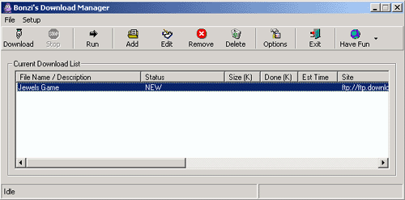
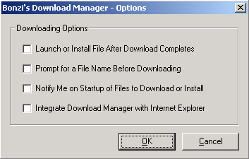

BonziBUDDY Download Manager The BonziBUDDY Download Manager is a program that can be used to keep track of files that you download from the Internet. The Download Manager will work when you are downloading add-on modules for BonziBUDDY at our web site or downloading files from any site on the Internet. What is the BonziBUDDY™ Download Manager? What the Download Manager does is keep track of the file that you are downloading so that if you’re ever disconnected from the Internet you can attempt the download again without hassle. It will also keep track of where your downloaded files are on your hard drive so that running the downloaded file is as easy as selecting it in the Download Manager window and clicking on the Run button. *** Please note that the BonziBUDDY Download Manager requires the use of Microsoft Internet Explorer version 5.0 or higher. Please visit http://www.microsoft.com/windows/ie to download the latest version if you have not already done so. How does the
Download Manager work? Any time that you click on a link to download a file from the Internet, BonziBUDDY will open the Download Manager window for you. He will tell you that he has taken control and will make sure that the download completes successfully (note that the BonziBUDDY program must be open for the Download Manager to kick in when you click on a link to a file in your web browser). Once the file is fully downloaded, BonziBUDDY will notify you that your download is complete. Installing your file is as easy as selecting the downloaded file in the Download Manager window and clicking the Run button. The program’s built-in installation program should then start and walk you through the rest of the installation process. What do the
various Options mean and how do they work?  When the Download Manager window is open, going to the Setup menu and choosing Options, or clicking on the Options button on the toolbar will open a window with four check boxes, as listed below. Launch or install file after download completes. – This option will set the download manager to automatically launch a program when it is finished downloading. Once the entire download process is done, the file’s own installation program will start automatically if this feature is on (checked). Prompt for a filename before downloading. – This option will open the “Save As” dialog box before opening the Download Manager window when you attempt to download a program from the Internet. This is so that you can change the filename or specify a directory in which to place the file. For novice computer users that have trouble navigating their hard drive folders or using Windows Explorer, we recommend leaving this feature off (unchecked). Notify me on startup of files to download or install. – This option, when on (checked), will notify you when you start up your BonziBUDDY that there are files waiting to be downloaded and/or installed. Integrate Download Manager with Internet Explorer – We recommend this feature remain on (checked). This will enable the Download Manager to detect that you are downloading a file from the Internet and open the Download Manager automatically any time you download a file. What function does each of the toolbar buttons perform? The function of each button on the toolbar is as listed below. Download – Selecting a file in the download list and clicking this button will start the download of the selected file or files. To select more than one file, hold down the Control (CTRL) key and make your selections by left-clicking on them. The file that is higher in the list will be downloaded first and the other selected files will start downloading immediately when the previous file is finished. Stop – This button will stop the download that is in progress. You will have to start downloading the whole file again if you use this feature. Your download does not pick up where it last left off. Run – Selecting a file and clicking on the Run button will open the file (this is the same as finding the file in your Windows Explorer and double-clicking on the file icon to open it). The great thing about the Download Manager is that it remembers where that file is … no more searching for your downloads! Add – Clicking on Add will bring up a window in which you can type the full path to a file to download and add it to your download list. You must know the full address to the file to use this feature. Edit – This button will open the path information about the entry that you have selected. It will allow you to make changes to the address listed for the file. Remove – This one is pretty self-explanatory. Highlighting a file in the download list and clicking Remove will remove the file from the download list (but will NOT delete the downloaded file itself). Delete – This feature will remove the downloaded file from your hard disk. After you install the file you have downloaded, use this button to delete the installer program. Options – This will open the Options screen, as mentioned in the previous section. Exit – Clicking this button will close the Download Manager. Any items left in the download list will remain there and will reappear the next time you open the Download Manager. Have Fun – We have added this feature to give you some ideas about what to do while your file is downloading. Browse the Web will open your web browser so that you can do some shopping or learning while your file is being downloaded. Play a Game will open your web browser to the Games page of the BonziBUDDY home site. You can play many games online against real, human opponents! Games like Keno, Bridge, Poker, Hearts, and more are there for your enjoyment! Listen to Music will open your web browser to the Guide to Online Music at the BonziBUDDY home page. There you can listen to Internet radio stations, sample music from retail compact discs, and more! If you love music, this is the place to go! If you have any further questions about this product or need technical help, please visit us on the web at http://www.bonzi.com/support.htm. We look forward to seeing you! Sincerely, The
BONZI Software Customer Support Team |